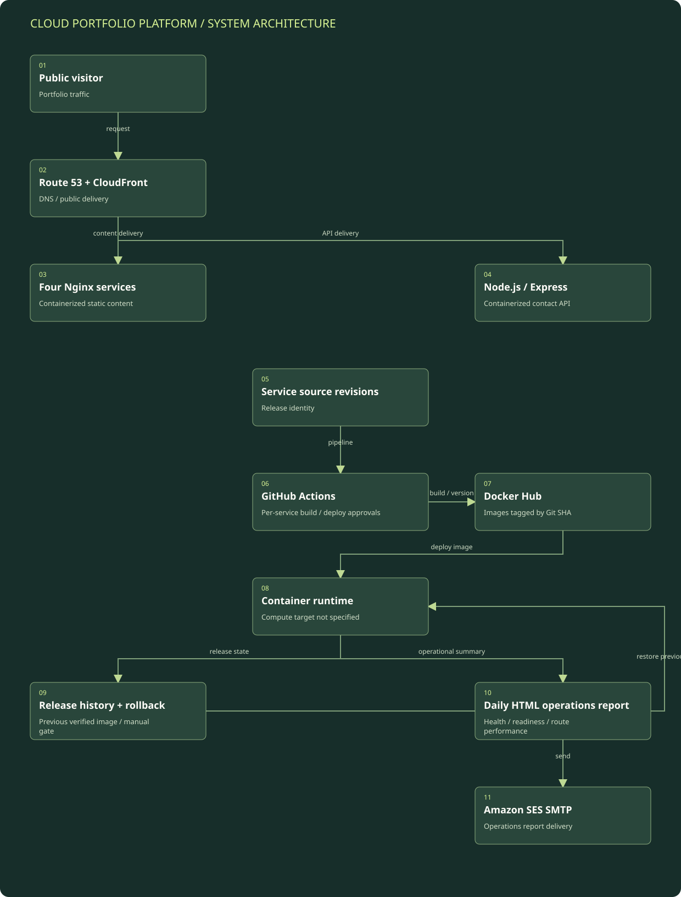

Resolve and deliver public traffic
Route 53 and CloudFront provide public delivery in the resume’s architecture. The exact origin mapping, DNS records, and compute host are not specified.
Detailed architecture / Personal cloud and delivery engineering
A resume-documented containerized portfolio with independently delivered services, explicit release approvals, rollback history, and automated operational reporting.
Resume-level reconstruction; unspecified infrastructure is explicitly marked.
Boxes represent logical modules and external systems; they do not imply a separate server for each box. On a narrow screen, scroll the diagram horizontally or open the full-size SVG. The tables below provide a text equivalent.

| Component | Responsibility | Boundary / qualification |
|---|---|---|
| Public delivery | Route 53 and CloudFront front the portfolio services. | Exact origins and routing configuration are not supplied. |
| Application services | Four static Nginx services plus one Node.js/Express contact API. | The runtime host is unspecified; no service-specific client content is included. |
| Delivery pipelines | GitHub Actions builds and deploys per service with manual gates. | Pipeline internals and scanning products are not available for source verification. |
| Image registry and release state | Docker Hub versions images by Git SHA; local history retains release information. | Rollback depends on the previous verified artifact and its corresponding state. |
| Operations reporting | A daily HTML report is emailed using Amazon SES SMTP. | Report recipients, operational data, and mail credentials are omitted. |
Route 53 and CloudFront provide public delivery in the resume’s architecture. The exact origin mapping, DNS records, and compute host are not specified.
Four Nginx-based static services provide the site content and a Node.js/Express service handles the contact API. They are containerized deployable units.
A per-service GitHub Actions pipeline uses manual build and deploy approval gates. Docker Hub retains image versions tagged by Git SHA.
The service deployment records version information locally so the current and previous verified image are available to the operational workflow.
The manual rollback workflow restores the previous verified image for a selected service. Separately, a scheduled daily report summarizes operational health/readiness and is emailed through Amazon SES SMTP.
Supplied resume, Personal Projects: Cloud Portfolio Platform. Architecture is limited to explicitly described components and relationships; original platform source was not reviewed.